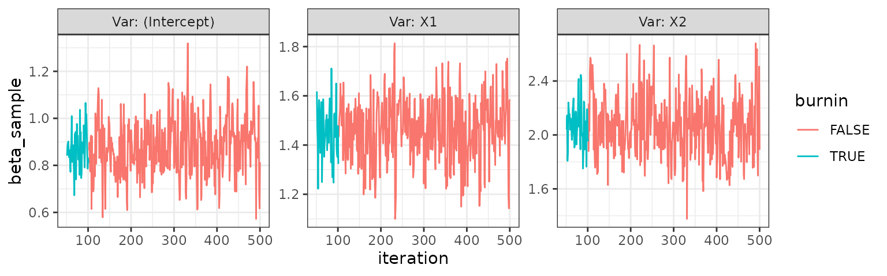
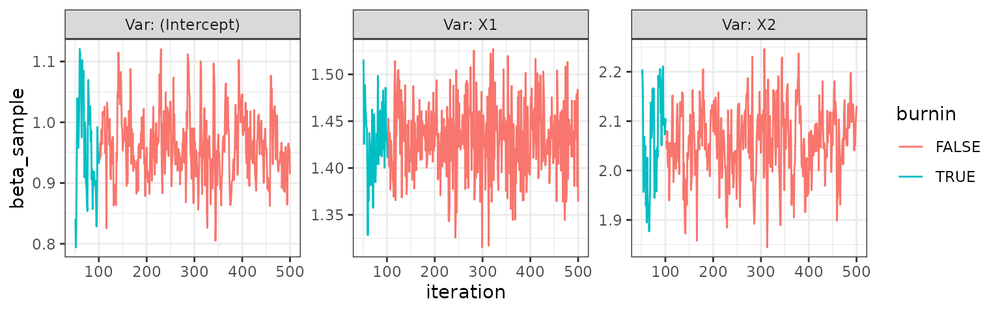
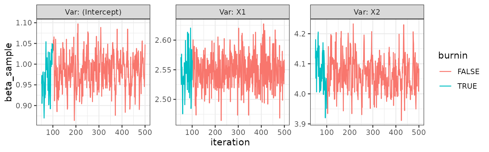
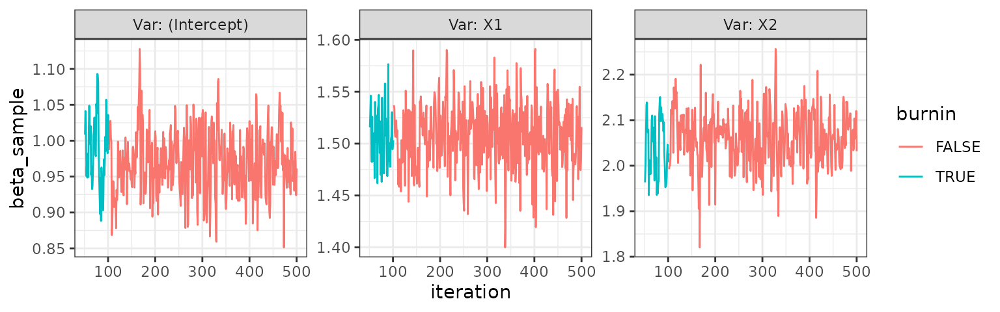
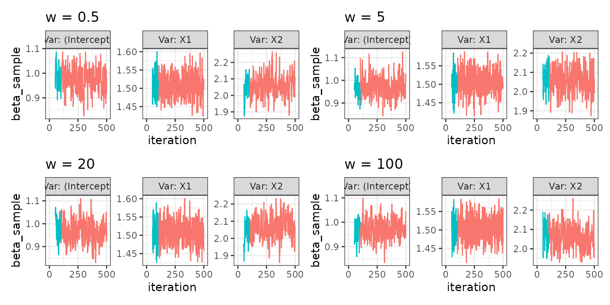
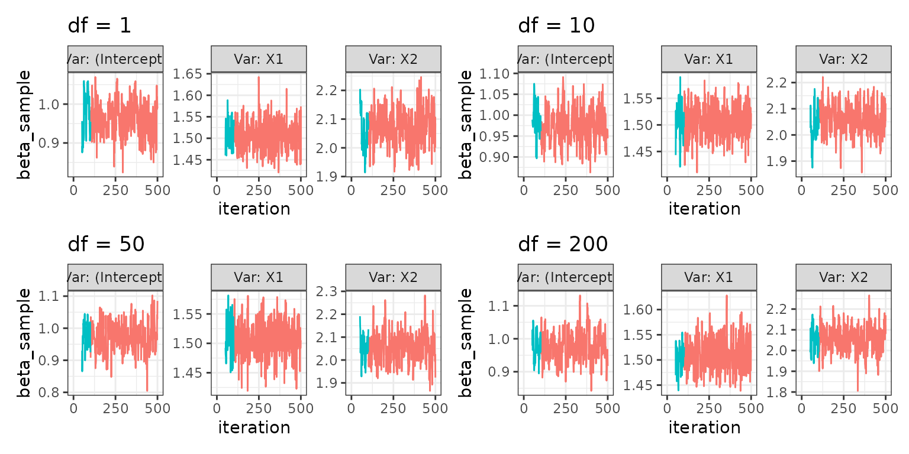
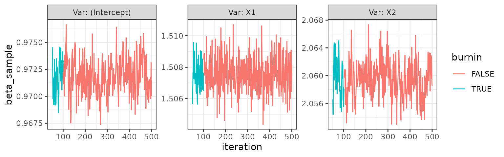

Family of response
The family of the response can be any family with an implemented
family class, in principle (see
help("family")). As of now, the implemented families in the
package are
- Gaussian
- Binomial
- Poisson
- Negative binomial
However, only a small amount of work is needed from the user to
enable the use of any family. The process of expanding available
families is described in vignette("customising").
Due to the implementation using a family object, This
also means that any compatible link function can be used for a family,
like fx. logit or probit for the binomial family. Also, the unexported
check_family function in the package ensures that accepted
values for the family argument in all the package’s
functions are a character, family function or
a family class object. The different uses will be seen
throughout the examples in this vignette but is also available in the
example section of the mcmcglm() documentation.
Data simulation for examples
In order to show that the package provides samples from the target posterior distribution, we simulate data for each scenario with known vector in order to see if the empirical distribution of each coefficient seems to match the value we simulated data from.
We start by generating a linear predictor from known values of and sampled values making up the design matrix . Then, in each example we can apply the relevant inverse link function to obtain the modelled mean in the GLM model. We can the simulate our response as sampling from the distribution corresponding to the family using the modelled mean as the relevant parameter of the distribution.
n <- 1000
x1 <- rnorm (n)
x2 <- rbinom (n, 1, .5)
b0 <- 1
b1 <- 1.5
b2 <- 2
lin_pred <- b0+b1*x1+b2*x2An example for the gaussian family is available in the introductory example in the README.
Example for binomial family
For the binomial family, the most commonly used link function is the logit given by
but other link functions are also available, including probit,
cauchit, log and cloglog (see help(family) for more
information).
We’ll show an example first for the binomial family with logit link function.
Logit link function
First, we define the data
logit_binom <- binomial(link = "logit")
mu_logit <- logit_binom$linkinv(lin_pred)
y_logit <- rbinom(n, size = 1, prob = mu_logit)
dat_logit <- data.frame(Y = y_logit, X1 = x1, X2 = x2)Then we fit the mcmcglm and inspect the trace plot.
logit <- mcmcglm(formula = Y ~ .,
data = dat_logit,
family = binomial(link = "logit"),
beta_prior = distributional::dist_normal(mean = 0, sd = 1),
w = 0.5)
logit
#> Object of class 'mcmcglm'
#>
#> Call: mcmcglm(formula = Y ~ ., family = binomial(link = "logit"), data = dat_logit,
#> beta_prior = distributional::dist_normal(mean = 0, sd = 1),
#> w = 0.5)
#>
#> Average of parameter samples:
#> (Intercept) X1 X2
#> 1 0.8802159 1.461209 2.061524
trace_plot(logit)
Probit link function
First, we define the data
probit_binom <- binomial(link = "probit")
mu_probit <- probit_binom$linkinv(lin_pred)
y_probit <- rbinom(n, size = 1, prob = mu_probit)
dat_probit <- data.frame(Y = y_probit, X1 = x1, X2 = x2)Then we fit the mcmcglm and inspect the trace plot.
probit <- mcmcglm(formula = Y ~ .,
data = dat_probit,
family = binomial(link = "probit"),
beta_prior = distributional::dist_normal(mean = 0, sd = 1),
w = 0.5)
probit
#> Object of class 'mcmcglm'
#>
#> Call: mcmcglm(formula = Y ~ ., family = binomial(link = "probit"),
#> data = dat_probit, beta_prior = distributional::dist_normal(mean = 0,
#> sd = 1), w = 0.5)
#>
#> Average of parameter samples:
#> (Intercept) X1 X2
#> 1 0.8318177 1.374661 2.162339
trace_plot(probit)
Example for poisson family
For the poisson family, the most commonly used link function is log, which is the only one we will showcase as the above example for the binomial family shows how it’s easily possible to specify the link function.
Define the data
mu_log <- exp(lin_pred)
y_pois <- rpois(n, lambda = mu_log)
dat_pois <- data.frame(Y = y_pois, X1 = x1, X2 = x2)Then we fit the mcmcglm and inspect the trace plot.
pois <- mcmcglm(formula = Y ~ .,
data = dat_pois,
family = "poisson",
beta_prior = distributional::dist_normal(mean = 0, sd = 1),
w = 0.5)
pois
#> Object of class 'mcmcglm'
#>
#> Call: mcmcglm(formula = Y ~ ., family = "poisson", data = dat_pois,
#> beta_prior = distributional::dist_normal(mean = 0, sd = 1),
#> w = 0.5)
#>
#> Average of parameter samples:
#> (Intercept) X1 X2
#> 1 0.9969416 1.504678 1.997051
trace_plot(pois)
Example for negative binomial family
Besides the families available in the stats package (via
help("family")), other families have been implemented in
various packages. Fx. the MASS::negative.binomial()
function which allows the use of the negative binomial family in various
inference procedures.
This distribution is an interesting choice for modelling of count data when a Poisson distribution is not appropriate due to the equality of the first and second moment of the distribution.
Below we showcase the use of this family using this package.
mu_log <- exp(lin_pred)
y_nbinom <- rnbinom(n, size = 1, mu = mu_log)
dat_nbinom <- data.frame(Y = y_nbinom, X1 = x1, X2 = x2)
theta <- 3Then we fit the mcmcglm and inspect the trace plot.
nbinom <- mcmcglm(formula = Y ~ .,
data = dat_nbinom,
family = MASS::negative.binomial(theta),
beta_prior = distributional::dist_normal(mean = 0, sd = 1),
w = 0.5)
nbinom
#> Object of class 'mcmcglm'
#>
#> Call: mcmcglm(formula = Y ~ ., family = MASS::negative.binomial(theta),
#> data = dat_nbinom, beta_prior = distributional::dist_normal(mean = 0,
#> sd = 1), w = 0.5)
#>
#> Average of parameter samples:
#> (Intercept) X1 X2
#> 1 0.9608508 1.431976 2.059662
trace_plot(nbinom)
Specifying the prior distribution
The package uses the distributional
package to specify the prior distribution of the
parameter as is mentioned in the documentation in
mcmcglm(). The distributional
package provides vectorised distribution objects with specified
parameters with methods for evaluating densities, CDFs, etc. and
generate random samples from the distribution.
The use in this package allows the user great flexibility in specifying varying independent univariate distributions or multivariate distributions for the parameter vector as will be illustrated in the examples below.
In all examples we will simply use a gaussian family of the response as in the introductory example in the README and alternate prior specifications.
Start by defining some data.
y_norm <- rnorm(n, mean = lin_pred, sd = 1)
dat_norm <- data.frame(Y = y_norm, X1 = x1, X2 = x2)Example of iid priors
In the case of iid priors, a single univariate distribution specification is needed:
To make the example not the exact same as the introductory example in the README, we show how the posterior distribution is affected by a prior with a mean very different from what the data(/likelihood) is showing.
iid <- mcmcglm(formula = Y ~ .,
family = "gaussian",
data = dat_norm,
beta_prior = distributional::dist_normal(1000, 1),
w = 0.5)
trace_plot(iid)
Of course, any distribution could be used here using the
dist_ functions of the distributional
package. Here, we simply use a normal distribution with
distributional::dist_normal(), but it might as well have
been distributional::dist_gamma(),
distributional::dist_student_t(), etc. See the Reference
for a full list of distributions.
Example of independent and potentially different priors
Due to an S3 method implementation in this mcmcglm package, it’s
possible to specify beta_prior as a list of
distribution objects. For illustrative purposes, we use the
distributions mentioned in the above example to specify a different
prior for each
component.
indep <- mcmcglm(formula = Y ~ .,
family = "gaussian",
data = dat_norm,
beta_prior = list(
distributional::dist_normal(mean = 0, sd = 1),
distributional::dist_gamma(shape = 1, rate = 2),
distributional::dist_student_t(df = 8, mu = 3, sigma = 1)
),
w = 0.5)
trace_plot(indep)
Example of multivariate prior
The only implemented multivariate distribution is the
distributional::dist_multivariate_normal(), which we can
use to specify different moments and potential correlation between
parameters in the model. An example is shown below with a prior
distribution specified as
mult <- mcmcglm(formula = Y ~ .,
family = "gaussian",
data = dat_norm,
beta_prior = distributional::dist_multivariate_normal(
mu = list(1:3),
sigma = list(
matrix(
c(1, 0.5, 0.2, 0.5, 1, 0.5, 0.2, 0.5, 1),
ncol = 3,
byrow = TRUE))
),
w = 0.5)
trace_plot(mult)Tuning (and changing) the slice sampler procedure
The sampling procedure in the package uses the compute graph gibbs (CGGibbs) sampler as introduced in Luu et al. 2024. This is done to efficiently “update” the linear predictor after each gibbs update of a single component of the parameter vector rather than naively recalculating the linear predictor using all terms.
Advantage of CGGibbs
See more details in the article, but we’ll quickly show the simple and elegant idea here. Assuming that in the ’th iteration (out of total iterations) we have sampled a new ’th coordinate of the -dimensional parameter vector , , the “current” value is
The CGGibbs approach to calculate the linear predictor in the ’th iteration for component , , is then $$\begin{align} \eta_{(j)}^{(k)}=\eta_{(j-1)}^{(k)}+\sum_{i=1}^n x_{ij} (\beta_j^{(k)}-\beta_j^{(k-1)})} \end{align}$$
while the naive approach is
This means that using CGGibbs, for any component update of , the computation time is , compared to for the naive approach.
Advantages of slice sampling (in combination with CGGibbs)
The linear predictor is used to calculate the log-likelihood, which is summed with the log-density of the prior distribution to obtain the log-potential, being the log-posterior up to a normalising constant. The log-potential is calculated in this algorithm in order to use slice sampling, which enables us to use any combination of family of the response and prior distribution of the parameters as we do not rely on conjugacy to get closed-form distributions to sample from.
Further, the slice sampling avoids spending computational power on numerical integration to find the normalising constant corresponding to the marginal distribution of data as the sampling procedure needs only know the posterior up to proportionality; the reason we use the log-potential.
The default method of slice sampling is with “stepping-out” and “shrinkage” as described in Neal 2003.
Using the default slice sampling method
All slice_ functions from the qslice package have
arguments x and log_target. The
mcmcglm function finds these entities as a new component of
the
vector in any given iteration and as the log-potential evaluated as a
function of this new value of the parameter.
Thus, the task left to the user is to specify tuning parameters of
the chosen algorithm, which is passed through ... in
mcmcglm(). The default slice sampler uses the
qslice::slice_stepping_out() function, which has a
mandatory non-default argument w with the slice width of
the algorithm. Thus, as readers might have noticed in other examples
within this vignette or the README, a
specification of w = x is given in the calls to
mcmcglm(). Example below for completeness:
norm <- mcmcglm(formula = Y ~ .,
family = "gaussian",
data = dat_norm,
beta_prior = distributional::dist_normal(0, 1),
w = 0.5)Changing the default slice sampling method
The argument qslice_fun in the mcmcglm()
function allows the user to change the default slice sampler
qslice::slice_stepping_out() to any slice sampler from the
qslice package. Thus, below is an example of using
qslice::slice_elliptical() from Murray et
al. (2010), which has tuning parameters mu and
sigma:
el <- mcmcglm(formula = Y ~ .,
family = "gaussian",
data = dat_norm,
beta_prior = distributional::dist_normal(0, 1),
qslice_fun = qslice::slice_elliptical,
mu = 3,
sigma = 2)
trace_plot(el)Investigating effect of tuning parameters of slice sampler
The utility functions mcmcglm_across_tuningparams() and
plot_mcmcglm_across_tuningparams() can be used to create
trace plots of the samples from running the algorithm with different
values of tuning parameters.
Varying slice width for the default slice sampler
Fx. for the default choice of slice sampler,
qslice::slice_stepping_out(), the tuning parameter is the
slice width w. A way to create a plot of samples across
different values of the slice width is seen below:
w05_mcmcglms <- mcmcglm_across_tuningparams(
seq(from = 0.5, by = 0.5, length.out = 4),
tuning_parameter_name = "w",
formula = Y ~ .,
family = "gaussian",
data = dat_norm)
plot_mcmcglm_across_tuningparams(w05_mcmcglms)
Varying degrees of freedom in a generalized elliptical slice sampler
Since the utility function work generally for any single tuning
parameter, below is an example of qslice::slice_elliptical
sampling procedure described in Nishihara et
al. (2014), varying the df parameter in the
algorithm.
Note that only a single tuning parameter can be “varied” at a time. So in the below example, we have to keep
sigmaandmuconstant, while we vary overdf
df1_mcmcglms <- mcmcglm_across_tuningparams(
c(1, seq(from = 10, by = 10, length.out = 3)),
tuning_parameter_name = "df",
formula = Y ~ .,
family = "gaussian",
data = dat_norm,
qslice_fun = qslice::slice_genelliptical,
mu = 2,
sigma = 1)
plot_mcmcglm_across_tuningparams(df1_mcmcglms)
Normal-normal sample method
Mostly for testing purposes, the package has an implementation of
sampling from a closed-form normal distribution in the case where both
the response and prior are normally distributed. Running this requires
specifying "normal-normal" in the argument
sample_method in mcmcglm() as seen in the
example below:
norm_norm <- mcmcglm(formula = Y ~ .,
family = "gaussian",
data = dat_norm,
beta_prior = distributional::dist_normal(0, 1),
sample_method = "normal-normal")
trace_plot(norm_norm)